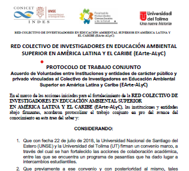
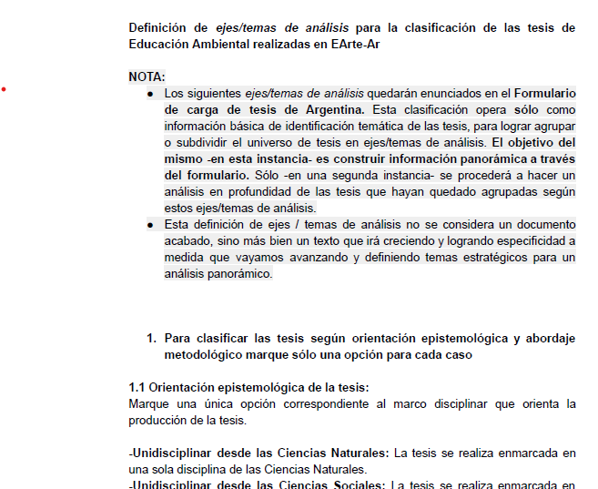
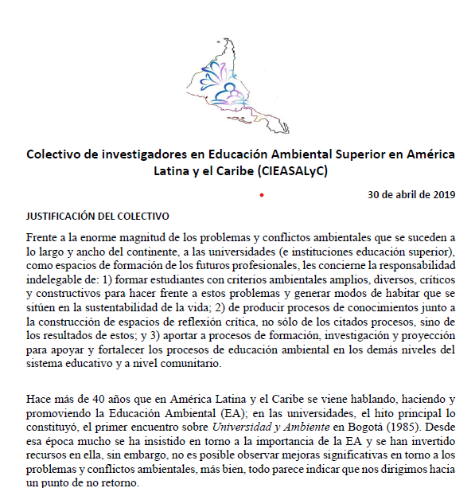
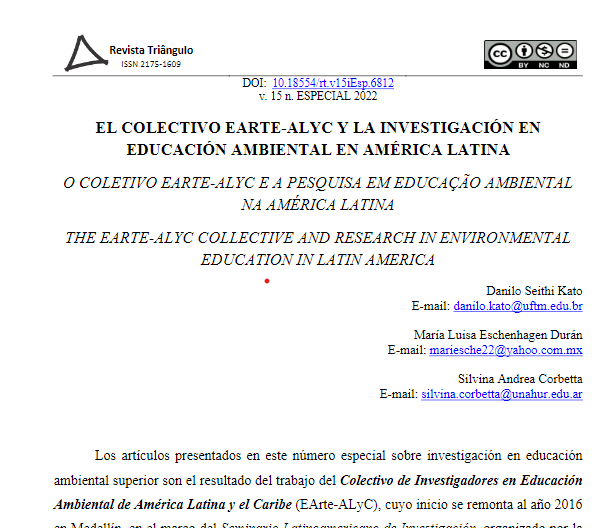
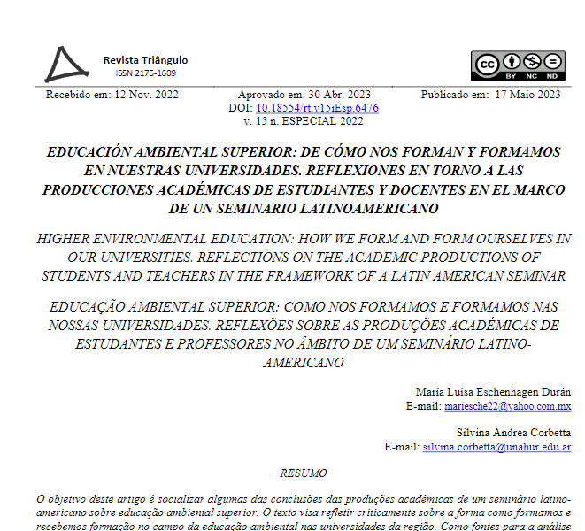

Dados panorâmicos
Produção intelectual
Contato
earte_alyc@unahur.edu.ar
DOCUMENTOS DO EArte ALyC
Protocolo de Trabalho Conjunto: Acordo de Vontades entre Instituições e Entidades Públicas e Privadas Ligadas ao Coletivo de Pesquisadores em Educação Ambiental Superior na América Latina e Caribe - EArte ALyC (2020)

Definição de Eixos/Temas de Análise para a Classificação das Teses de Educação Ambiental Realizadas no EArte-Ar

Justificação do Coletivo de Pesquisadores em Educação Ambiental Superior na América Latina e no Caribe (CIEASALyC, 30 de abril de 2019)

O Coletivo EArte ALyC e a Pesquisa em Educação Ambiental na América Latina (2022)

Educação Ambiental Superior: Como Somos Formados e Formamos em Nossas Universidades: Reflexões sobre as Produções Acadêmicas de Estudantes e Professores no Âmbito de um Seminário Latino-Americano (2023)
